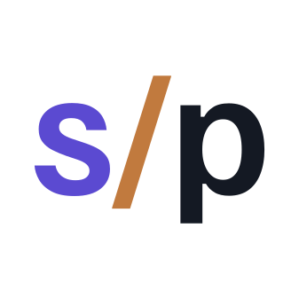
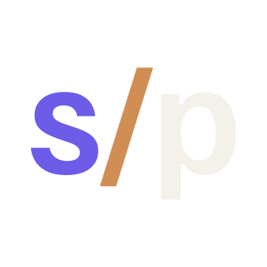
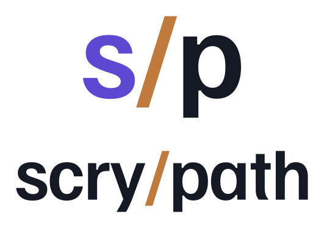
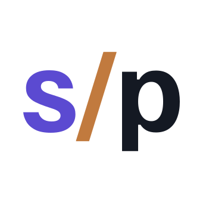

scrypath · brand book · v1.35
The brand system for scrypath — an Ecto-native search-indexing library for Elixir & Phoenix. Calm, exact, and built for engineers. This page is self-contained: fonts, tokens, and logo travel with it.
identity
The wordmark is the logo. Pristine Familjen Grotesk letters with one signature move: a weight-matched copper / path-separator. It reads instantly as a path, it's developer-native, and it never relies on a font at runtime (the SVG is outlined to vectors).




Keep clear space around the lockup equal to the cap-height of the “s” on all sides. Don't crowd it with other marks or text.
Minimum size. Wordmark never below 18px tall (≈96px wide). The s/p favicon is tuned to stay legible at 16px.
palette
Violet leads, copper accents (≈5% of any surface — the slash, a hover, a focal node — never a status tone), over warm neutrals and a deep night. The same tokens drive light and dark.
Contrast is enforced in product by contrast-pairs.mjs (WCAG AA: 4.5:1 text, 3.0:1 large/non-text), composited in sRGB. Muted text rides a 64% mix of base-content and still clears AA in both themes. See notes/accessibility-checks.md.
typography
Three SIL OFL faces. Familjen Grotesk for display, Inter for UI & prose, IBM Plex Mono for code & CLI. (Familjen replaces Space Grotesk — reserved for a sibling project.)
foundations
Soft, low-spread. Dark theme swaps to ambient depth + an optional violet glow.
in use
Built straight from the tokens — they render correctly in both themes. Toggle the theme (top-right) to verify.
Tab to a button to see the single global focus ring (2px var(--sp-focus)).
# add scrypath to your schema use Scrypath.Indexable, fields: [:title, :body], adapter: Scrypath.Adapters.Postgres
| index | documents | status |
|---|---|---|
| posts | 42,180 | healthy |
| comments | 118,902 | healthy |
| users | 9,431 | reindexing |
writing
Calm, exact, capable. Explain — don't hype. Be specific. Assume engineering literacy. Sound composed under complexity. Metaphor sparingly.
implementation
Everything here ships as plain files — no build step.
| need | use |
|---|---|
| CSS variables (both themes) | tokens/tokens.css |
| Token data (JSON) | tokens/tokens.json |
| daisyUI theme (copy-paste) | tokens/daisyui-theme.example.js |
| Brand fonts (@font-face) | assets/fonts/fonts.css |
| Logo & favicon | assets/logo-*.svg · favicon.svg |
| Examples | examples/components.html · landing-page-section.html · readme-header-example.md |
/* drop into any page */ @import "tokens/tokens.css"; @import "assets/fonts/fonts.css"; /* then use var(--sp-primary), var(--sp-font-display), … */
scrypath brand book · v1.35 · self-contained. Type: Familjen Grotesk, Inter, IBM Plex Mono — all SIL OFL 1.1 (see assets/fonts/OFL-*.txt). Palette & tokens mirror the live scrypath_ops theme. © scrypath.